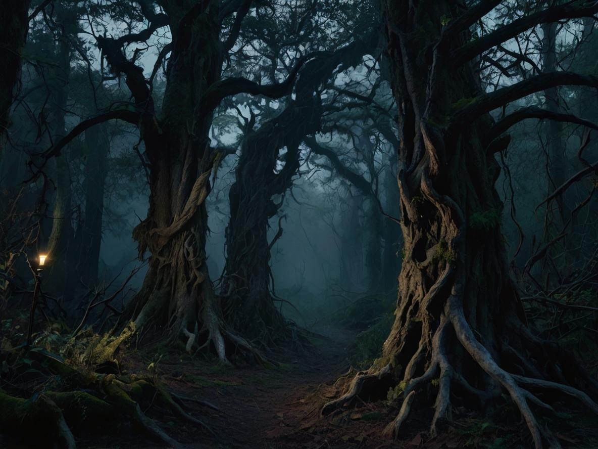

Après plusieurs heures de voyage, tu arrives à l'entrée de la forêt. Une épaisse brume recouvre le sol et d'étranges bruits résonnent entre les arbres.
Soudain, tu aperçois une silhouette encapuchonnée qui disparaît derrière un vieux chêne. Non loin de là, un chemin mène à une petite cabane éclairée. Un bruissement inquiétant monte des arbres.
Que fais-tu ?